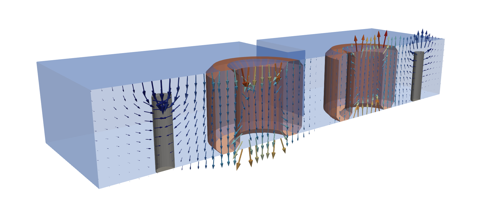

Magnelio#
Magnelio is a Python library for full-wave 3D electromagnetic field simulation. Its standard workflow is broadband S-parameter extraction over waveguide ports on arbitrary 3D geometry; the workhorse solver is a time-domain Finite Integration Technique (FIT-TD) engine.

This documentation has five pillars:
Tutorials. Executable walkthroughs of the public API, ordered from the first simulation to advanced workflows. Every page is generated from a runnable script and can be downloaded as a Python script or a Jupyter notebook.
How-to guides. Task-oriented recipes: each page solves one concrete engineering problem end to end and is meant to be downloaded and adapted to your own device.
API reference. The public surface — the core namespace and the domain namespaces — generated from the docstrings.
Technical description. Background information, mostly as a developer reference. Every numerical method used in Magnelio is described together with the published scientific work it is based on. Each chapter also explains how the method is realised in the code base (module paths, discrete formulas, conventions), at the level of detail needed to audit the implementation or to adapt a new method into the same framework.
Bibliography. The works cited throughout the documentation.
Questions, ideas and feedback of any size go to GitHub Discussions; wrong results, crashes and refused valid input to the issue tracker.
Tutorials
How-to guides
API reference
Technical description
- Numerical methods
- Spatial discretisation and time integration
- Geometry construction
- CAD import
- Board import
- Mesh generation and conformal geometry
- Boundary conditions
- Waveguide ports and S-parameter extraction
- Discrete ports and lumped circuit elements
- Dispersive and lossy materials
- Conductor losses
- Sources, monitors and post-processing
- Far-field computation
- Eigenmode analysis
- 3D viewer
- Implementation engineering (non-method)
Bibliography